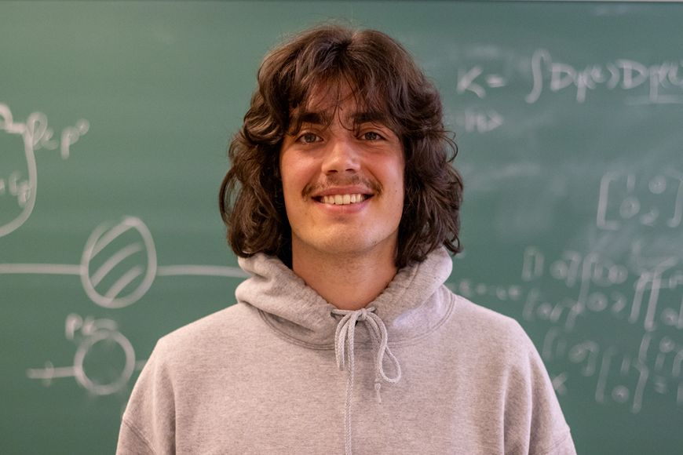

So you've found my website, welcome! I'm an aspiring physicist, a Master's student at ETH Zurich, with particular interest in quantum information theory and measurement. I study how quantum mechanics mediates not just what we know about physical systems, but also what we CAN know. In this blog, I document some of the things I've worked on.
Projects
Optical metasurfaces for the simulation of open-system quantum dynamics
Quantum systems, in general, undergo unitary evolutions.
Optical metasurfaces for quantum state tomography
Section in progress...
Applying machine-learning techniques to the design of phase masks for multi-plane light conversion
Section in progress...
Exploiting symmetry in Mach-Zender interferometers for robust precision enhancement
Section in progress...